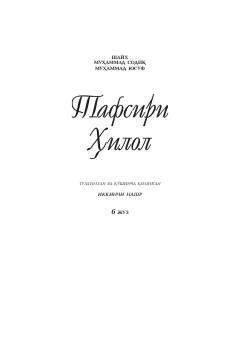

THQur'on oyatlarining o'zbekcha tafsiri — 6-qism.
Bu kitob 'Tafsiri hilol' seriyasining 6-qismi bo'lib, Qur'on oyatlarining tafsiri va izohlariga bag'ishlangan. Unda islomiy ilmlar, oyatlarning ma'nolari va diniy masalalar ko'rib chiqiladi. Asar o'zbek tilidagi Qur'on tafsiri adabiyotining muhim qismini tashkil etadi.